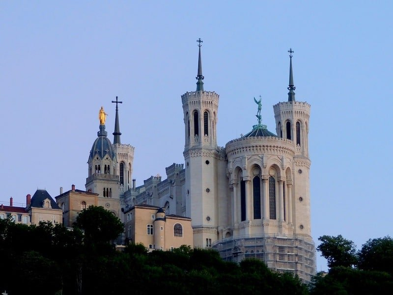
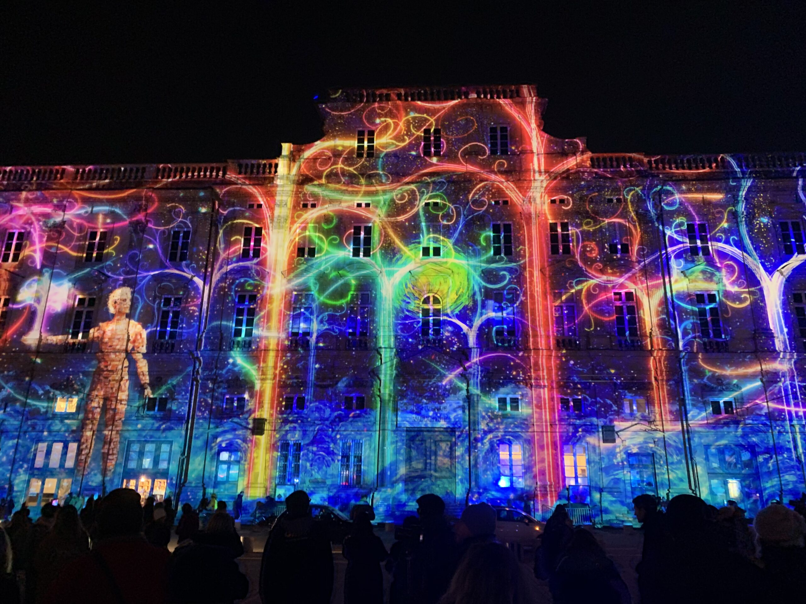
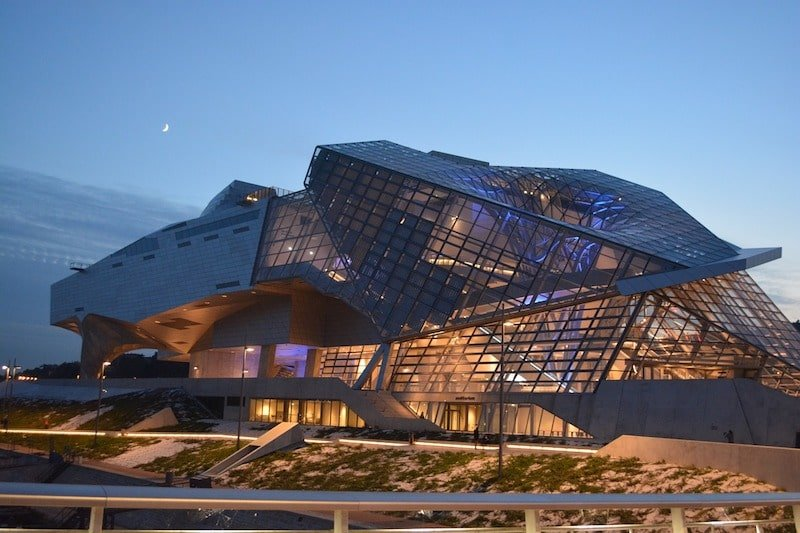

Lyon
3 lieux à voir à Lyon
Notre-Dame de Fourvière
Achevée en 1896, la basilique est un monument emblématique de la cité et un incontournable quand on désire visiter Lyon ! Surplombant la ville, elle comprend un décor intérieur et extérieur très riche, avec notamment un cycle de mosaïques représentant
l’histoire de la Vierge dans l’histoire de France et de l’Église. Depuis l’esplanade de la basilique, vous pourrez profiter d’une vue panoramique sur la cité !
i
La Fête des Lumières
Si vous souhaitez visiter Lyon en fin d’année, ne manquez surtout pas la fête des lumières qui a lieu tous les ans au début du mois de décembre. Durant 4 soirs, la ville se revêt d’illuminations et jeux de lumière en tous genre. Que ce soit dans les
rues, sur les bâtiments où célèbres monuments, les lumières sont partout ! Profitez de cette atmosphère magique en famille, entre amis ou même en solo. Vous repartirez des étoiles plein les yeux !

le Musée des Confluences
Ouvert en 2014, le Musée des Confluences siège dans un bâtiment aux allures d’ovni et reprend les collections du Muséum de Lyon fermé en 2007. Vous venez visiter Lyon ? Faîtes un tour dans cet exceptionnel musée contemporain proposant des collections
autour de la « confluence des savoirs».
